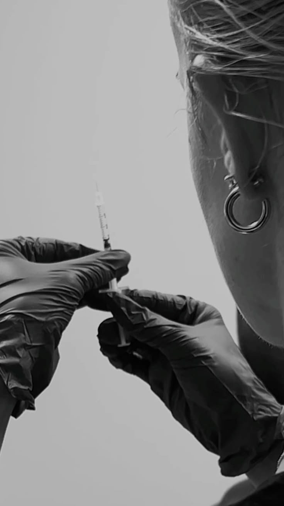

Abordagem
Cuidar da sua pele
Diagnóstico da Pele
Avaliamos a sua pele, o seu tipo e as suas preocupações, para perceber o que está por trás de cada sinal e escolher o tratamento certo.
Cuidado Personalizado
A pele não é só física, é também confiança. Acompanhamos cada pessoa com atenção, para se sentir segura em cada passo do tratamento.
Ciência e Cuidado
Juntamos diagnóstico clínico, tecnologia e cuidados diários, para um resultado equilibrado e duradouro para a sua pele.
Tratar a Causa
Em vez de tapar sintomas, procuramos a causa — acne, manchas, sensibilidade ou sinais de idade — e tratamos na origem.
Pele Confiante
O objetivo é simples: uma pele saudável, com a rotina e os cuidados certos para si, sem complicações.
Maputo
Clínica dermatológica em Maputo, com atendimento personalizado e acompanhamento da sua pele.

Sobre
Bem-vindo à DERMIQ CLINIC
Na nossa clínica, juntamos diagnóstico dermatológico, tratamentos faciais e acompanhamento personalizado, para cuidar da saúde e da beleza da sua pele, com atenção a cada detalhe.
O nosso cuidado é guiado pela ciência da pele. Nunca é só uma paciente — é ouvida e compreendida.
Ver serviçosServiços
Os nossos tratamentos de pele
Consulta Dermatológica
Diagnóstico completo da sua pele e um plano de tratamento feito para si.
Tratamento de Acne
Tratamento da acne e das marcas, com acompanhamento até a pele estabilizar.
Manchas e Melasma
Cuidado das manchas e do melasma, com séruns e proteção adequada.
Limpeza Profunda e Hidratação
Limpeza profunda, hidratação e uma pele mais limpa e luminosa.
Séruns e Tratamentos Faciais
Tratamentos faciais com séruns escolhidos para o seu tipo de pele.
Acompanhamento da Pele
Um plano passo a passo, desenhado para guiar a transformação da sua pele em poucas semanas.
Essência
Cuidado que se sente
Base científica, totalmente pessoal. O seu plano de tratamento, passo a passo.


Depoimentos
Resultados que se veem
“A abordagem da DERMIQ CLINIC é verdadeiramente única. Depois de anos a lutar com a minha pele, finalmente senti-me ouvida e cuidada, com um plano claro e resultados que se veem.”
Cliente DERMIQ
“Finalmente encontrei alívio para a minha acne.”
Cliente DERMIQ
“Sinto a minha pele mais equilibrada do que nunca. Sinto-me confiante com a minha pele.”
Cliente DERMIQ


Blog
Do diagnóstico ao resultado

A sua pele em equilíbrio
Como cuidar da pele todos os dias.

Manchas: o que as causa
Como prevenir e tratar manchas.

Proteção solar todos os dias
Porque o sol envelhece a pele.
Cuidar começa com clareza
Na primeira consulta, explicamos o diagnóstico, o plano e o que esperar, sem pressa.
Pronto para começar a cuidar da sua pele?
Perguntas frequentes
O que trata a dermatologia?
A dermatologia trata a saúde da pele, do cabelo e das unhas, incluindo acne, manchas, sensibilidade e sinais de envelhecimento.
Como funciona a primeira consulta?
Na primeira consulta avaliamos a sua pele, falamos das suas preocupações e definimos um plano de tratamento personalizado.
Os tratamentos são personalizados?
Sim. Cada plano é feito para o seu tipo de pele e para os seus objetivos.
Posso combinar vários tratamentos?
Sim, quando faz sentido clínico. O plano combina os tratamentos de forma segura e gradual.
O que esperar da primeira consulta?
Uma avaliação completa, uma explicação clara do diagnóstico e o plano de tratamento, sem pressa.
Tratam doenças crónicas da pele?
Sim, com acompanhamento regular e ajustes ao plano conforme a pele responde.
Quando vejo resultados?
Depende do tratamento e da pele de cada pessoa. Na consulta, explicamos o tempo esperado para o seu caso.